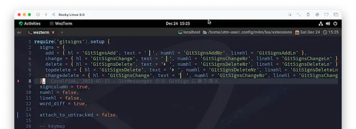
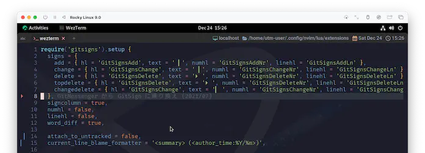

🌃 gitsigns.nvim
今回はgitsigns.nvimです。
人によってはgitを全く使っていないかもしれませんが、これをきっかけに挑戦してみると楽しいと思います。
Deep buffer integration for Git
Git のための深甚なる buffer 統合
だよねー。もう Christmas🎄 だもんねー😆 華やかな "装飾" を施していきましょう❗
I may not always love you
僕が 君をいつまでも愛してるとは限らない
📋 Requirements
Neovim >= 0.9.0
If your version of Neovim is too old, then you can use a past release.
使用している Neovim のバージョンが古すぎる場合は、過去のリリースを使用することができます。
If you are running a development version of Neovim (aka master), then breakage may occur if your build is behind latest.
Neovimの開発版 (別名master) を使っている場合、ビルドが最新版より遅れていると、バグが発生する可能性があります。
Newish version of git. Older versions may not work with some features.
gitの新しいバージョン。古いバージョンでは機能によっては動作しないことがあります。
まあ、ざっくり要約すると、
Neovimもgitも "stable releaseをあえて外している😑" とかしてなければ気にしなくて平気です。
大抵の場合、そのまま進んで問題ないはずです。
But long as there are stars above you
You never need to doubt it
でも 君の上に星が輝く限り
疑う必要はないんだ
I’ll make you so sure about it
この想いを 君に伝えてみせるよ
🛠️ Installation & Usage
もう意地でも聖夜🌃に間に合わせます。gitsignsに負けないくらい超高速でいきましょう😆
Install using your package manager of choice. No setup required.
Optional configuration can be passed to the setup function. Here is an example with most of the default settings: お好きなパッケージマネージャーを使ってインストールしてください。セットアップは不要です。
オプションの設定をセットアップ関数に渡すことができます。以下はデフォルト設定の例です：
今回は色々カスタマイズしていきたいので、 まずは🛠️ Installation & Usageに示されているデフォルトセッティングを入れておくことにしましょう。
これを基に、あとでカスタマイズしていきます。
require('gitsigns').setup {
signs = {
add = { text = '┃' },
change = { text = '┃' },
delete = { text = '_' },
topdelete = { text = '‾' },
changedelete = { text = '~' },
untracked = { text = '┆' },
},
signs_staged = {
add = { text = '┃' },
change = { text = '┃' },
delete = { text = '_' },
topdelete = { text = '‾' },
changedelete = { text = '~' },
untracked = { text = '┆' },
},
signs_staged_enable = true,
signcolumn = true, -- Toggle with `:Gitsigns toggle_signs`
numhl = false, -- Toggle with `:Gitsigns toggle_numhl`
linehl = false, -- Toggle with `:Gitsigns toggle_linehl`
word_diff = false, -- Toggle with `:Gitsigns toggle_word_diff`
watch_gitdir = {
follow_files = true
},
auto_attach = true,
attach_to_untracked = false,
current_line_blame = false, -- Toggle with `:Gitsigns toggle_current_line_blame`
current_line_blame_opts = {
virt_text = true,
virt_text_pos = 'eol', -- 'eol' | 'overlay' | 'right_align'
delay = 1000,
ignore_whitespace = false,
virt_text_priority = 100,
use_focus = true,
},
current_line_blame_formatter = '<author>, <author_time:%R> - <summary>',
sign_priority = 6,
update_debounce = 100,
status_formatter = nil, -- Use default
max_file_length = 40000, -- Disable if file is longer than this (in lines)
preview_config = {
-- Options passed to nvim_open_win
style = 'minimal',
relative = 'cursor',
row = 0,
col = 1
},
}
use {
'lewis6991/gitsigns.nvim',
config = function() require 'extensions.gitsigns' end,
}
ってことで、もうすっかりお馴染みの:PackerSync😆

フライングで登場していたsigncolumn からここまでに2ヶ月かかりました...。
まあなんか、やってやったぜってな感じはあります☺️
もしgitの管理下に居たのなら、もうこの時点でsigincolumnに装飾🎄がされてますね❗yeah!! 🍾
God only knows what I’d be without you
君がいてくれなかったら 僕がどうなっていたか
それは 神様だけが知っている
🎹 Keymaps
カスタマイズに入る前に、キーマップも入れておきましょう。
キーマップはデフォルトでは有効になっていないようなので、 これもKeymapsからそのまま貼り付けちゃいます。
Gitsigns provides an on_attach callback which can be used to setup buffer mappings.
Gitsigns は on_attach コールバックを提供し、buffer マッピングの設定に使用することができます。
-- require('gitsigns').setup {
-- 📋 以下のコードを setup の中にペーストします。
on_attach = function(bufnr)
local gitsigns = require('gitsigns')
local function map(mode, l, r, opts)
opts = opts or {}
opts.buffer = bufnr
vim.keymap.set(mode, l, r, opts)
end
-- Navigation
map('n', ']c', function()
if vim.wo.diff then
vim.cmd.normal({']c', bang = true})
else
gitsigns.nav_hunk('next')
end
end)
map('n', '[c', function()
if vim.wo.diff then
vim.cmd.normal({'[c', bang = true})
else
gitsigns.nav_hunk('prev')
end
end)
-- Actions
map('n', '<leader>hs', gitsigns.stage_hunk)
map('n', '<leader>hr', gitsigns.reset_hunk)
map('v', '<leader>hs', function()
gitsigns.stage_hunk({ vim.fn.line('.'), vim.fn.line('v') })
end)
map('v', '<leader>hr', function()
gitsigns.reset_hunk({ vim.fn.line('.'), vim.fn.line('v') })
end)
map('n', '<leader>hS', gitsigns.stage_buffer)
map('n', '<leader>hR', gitsigns.reset_buffer)
map('n', '<leader>hp', gitsigns.preview_hunk)
map('n', '<leader>hi', gitsigns.preview_hunk_inline)
map('n', '<leader>hb', function()
gitsigns.blame_line({ full = true })
end)
map('n', '<leader>hd', gitsigns.diffthis)
map('n', '<leader>hD', function()
gitsigns.diffthis('~')
end)
map('n', '<leader>hQ', function() gitsigns.setqflist('all') end)
map('n', '<leader>hq', gitsigns.setqflist)
-- Toggles
map('n', '<leader>tb', gitsigns.toggle_current_line_blame)
map('n', '<leader>tw', gitsigns.toggle_word_diff)
-- Text object
map({'o', 'x'}, 'ih', gitsigns.select_hunk)
end
}
もう結構luaにも見慣れてきたんじゃないでしょうか❓
「on_attachと言われても...」、という感じには多少なるものの、map()がvim.keymap.set()に繋いでくれてるのは、まあなんか分かりますよね😉
パラメータもほぼそのままなので、カスタマイズをしたい場合はmap()を追加・変更していけば良さそうです。
使用できる機能は以下で説明されています。
Note functions with the {async} attribute are run asynchronously and accept
an optional {callback} argument.
{async} 属性を持つ関数は非同期に実行され、オプションの {callback} 引数を受け付けることに注意してください。
キーマップにはあらかじめ機能が割り当てられていて、「こんな色々できるんだぁ☺️」とサプライズ満載なので、ぜひ色々試してみてください。
preview_hunkとかちょっとした時に便利😉

🥌 Customize
手始めに、装飾を少しアレンジしてみます。
もちろん、このままがいい❗って場合はスキップしちゃって構いません。デフォルトでも全然イケてるプラグインです😆
If you should ever leave me
君が 僕を見限るようなことがあるかもしれない
🖊️ signs / signs_staged
ここでは表示するtextを変えてみました。
signs = {
add = { text = ' ▎' },
change = { text = ' ▎' },
delete = { text = ' ' },
topdelete = { text = ' ' },
changedelete = { text = '~' },
untracked = { text = '▎ ' },
},
signs_staged = {
add = { text = ' ▎' },
change = { text = ' ▎' },
delete = { text = ' ' },
topdelete = { text = ' ' },
changedelete = { text = '~' },
untracked = { text = '▎ ' },
},
| before |  |
| after |  |
🏂 word_diff
word_diff gitsigns-config-word_diff
Type: `boolean`, Default: `false`
Highlight intra-line word differences in the buffer.
バッファ内の行内の単語の相違をハイライトします。
Requires `config.diff_opts.internal = true` .
Uses the highlights:
• For word diff in previews:
• `GitSignsAddInline`
• `GitSignsChangeInline`
• `GitSignsDeleteInline`
• For word diff in buffer:
• `GitSignsAddLnInline`
• `GitSignsChangeLnInline`
• `GitSignsDeleteLnInline`
• For word diff in virtual lines (e.g. show_deleted):
• `GitSignsAddVirtLnInline`
• `GitSignsChangeVirtLnInline`
• `GitSignsDeleteVirtLnInline`
word_diffを有効にすると、単語単位で差分が検出されます。

...ちょっと派手すぎません❗❓
何十人も集まるようなパーティーであれば、このぐらい盛り上がってくれれば、それはもう大変に開き甲斐のあるパーティーです🥳
でも、普段使いで❓これを❗❓いや〜...、それはなにかこう、特別な勇気が必要になってくるような...。
なので、もうちょっと抑えたいなーと思うんですけど...🤔
そういえば:h gitsigns-config-word_diffの中で、これに関して使用しているhighlightsが示されてますよね。
highlightsといえば心強い味方が既にいました❗onenord.nvimです😆
extensions/onenord.luaを引っ張り出してきて、以下を追記してみましょう。
custom_highlights = {
MatchParen = { fg = colors.none, bg = colors.none, style = 'bold,underline' },
-- ここに追記する
GitSignsAddLnInline = { fg = colors.none, bg = colors.none, style = 'underline' },
GitSignsChangeLnInline = { fg = colors.none, bg = colors.none, style = 'underline' },
GitSignsDeleteLnInline = { fg = colors.purple, bg = colors.none, style = 'bold,underline' },
},

ありがとう...❗onenord...❗
🧊 attach_to_untracked
これは、わたしが今の今まで気づいていなかったんですが...。
attach_to_untracked *gitsigns-config-attach_to_untracked*
Type: `boolean`, Default: `true`
Attach to untracked files.
未追跡のファイルにアタッチする。
ちゃんとアタッチを無効にするオプションありました😮
signcolumnでこれを知らなくて、
numberオプションを"クセつよ"呼ばわりしてたんですが、わたしが無知なだけでした...。
ほんとごめんなさい😭
🦌 current_line_blame_formatter
わたし自身はそんなにうまく活用できてないんですが、これはちょっと面白いやつです。
current_line_blame_formatter gitsigns-config-current_line_blame_formatter
Type: `string|function`, Default: `' <author>, <author_time> - <summary>'`
String or function used to format the virtual text of
|gitsigns-config-current_line_blame|.
仮想テキストをフォーマットするために使用される文字列または関数。
When a string, accepts the following format specifiers:
文字列の場合、以下のフォーマット指定子を受け付けます。
フォーマット指定子については量が多いので手元で確認してもらうとして、
デフォルトでcurrent_line_blameを有効化するかどうかは、以下のパラメータです。
current_line_blame gitsigns-config-current_line_blame
Type: `boolean`, Default: `false`
Adds an unobtrusive and customisable blame annotation at the end of
the current line.
現在の行の末尾に、目立たずカスタマイズ可能な注釈を追加します。
The highlight group used for the text is `GitSignsCurrentLineBlame`.
デフォルトでは有効になっていないのですが、キーマップをそのまま持ってきているなら以下のコードが入っているはずです。
map('n', '<leader>tb', gs.toggle_current_line_blame)
leadertbとしてみましょう。
変更箇所に持っていくとあら不思議😮
| before |  |
| after |  |
summaryが表示されました😆
これだとちょっと見にくいな〜と思ったら、またonenord.luaにGitSignsCurrentLineBlameを追加して好きなように変えられます。
🔗 Plugin Integrations
gitsign.nvimと連携するプラグインとして、以下が挙げられています。
When viewing revisions of a file (via :0Gclog for example),
Gitsigns will attach to the fugitive buffer with the base set to the commit immediately before the commit of that revision.
This means the signs placed in the buffer reflect the changes introduced by that revision of the file.
ファイルのリビジョンを（たとえば :0Gclog 経由で）表示する場合、Gitsigns はそのリビジョンのコミット直前のコミットをベースとして、fugitive バッファーにアタッチします。
つまり、バッファに配置された標識は、そのファイルのそのリビジョンで導入された変更を反映しています。
If installed and enabled (via config.trouble; defaults to true if installed),
:Gitsigns setqflist or :Gitsigns setloclist will open Trouble instead of Neovim's built-in quickfix or location list windows.
インストールされて有効になっている場合 (config.trouble 経由; インストールされている場合のデフォルトは true)、
:Gitsigns setqflist または :Gitsigns setloclist は
Neovim 組み込みのクイックフィックスまたはロケーションリストウィンドウの代わりに Trouble を開きます。
このサイトに限った話で言うと、vim-fugitiveは (わたしが使ったことないので) 取り上げていなくて、
trouble.nvimは16.11章 で取り上げています。...ここからだと、だいぶ先ですが😅
言うまでもなく、そんなの全然気にしないで、必要ならどんどんインストールしていきましょう❗
Though life would still go on, believe me
The world could show nothing to me
So what good would living do me?
きっとその世界では もう何も見せてはくれないんだ
そんなところで生きることに 何の意味がある？
それでも命を続けていく限り、信じてほしい
🎁 Wrap Up
賑やかな装飾を施せましたね❗サンタさんも大喜びです🎅
冒頭でも少し書いてるんですが、やっぱりgitを使い出すと世界が広がるし、色々知れて楽しいと思います。
"git触ったことない❗"って人でも、このプラグインをきっかけに使い始めるのは全然アリです❗
下手しても失敗しても、未来で笑い飛ばせばいいんです❗❗...はい、ごめんなさい🥹